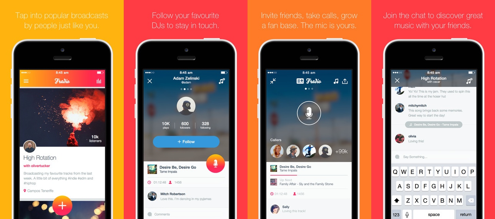

Fradio is your personal radio station, run live from your phone. Create a broadcast, invite your friends, interact while you all jam out together.
Learn more: http://www.fradio.com/
The 2nd quarter of 2014, Guvera decided to launch a new app around the idea of hosting a live radio broadcast from your phone to share with your friends and the world. Lots of hype around sharing music and Guvera needed another way to engage new users. No other similar apps exist in the app stores.

Fradio, Friends + Radio was born.
Many months were spent to determine the core value proposition and key feature list. The main idea was to bring friends or anyone together to listen to a radio show where the broadcaster got to control the flow of music and interact with his/her listeners. The ultimate goal of the product is to attract new users to the Guvera music platform. The major requirements for the app were:
- Create a broadcast at any time with their music from Guvera
- Invite your friends via push notification, email, or sharing a link
- Allow anyone to listen in to a broadcast on their mobile device
- Allow the broadcaster to receive & answer incoming calls from listeners
- Allow the broadcaster and listeners to comment in a group chat
- Available in Apple App Store & Google Play Store
- Website with list of past, present and future broadcasts
We had some very talented designers on our team that incorporated all of these features into a wicked package. As for engineering efforts, the majority of these features (messaging, sharing, website) have been done before so we implemented industry standards. The largest and most difficult feat would be how to integrate a live phone call with music and broadcast it to all listeners. And do this for a large scale audience, approx. 1 million concurrent listeners. This required a solution that would multiplex two different live audio sources into one and encoded for streaming on iOS & Android devices from anywhere in the world.
Cloud mixing for live radio

It's Alive!!
Fradio finally went live after 8 months of development and kicked off with a high school campaign during their annual summer festivities. It was well received by the target market (teens and young adults who love to share content, especially music) and has since been debuted with the Fradio Booth at SXSW 2015. What are you waiting for? Create your own broadcast today!
In the news: